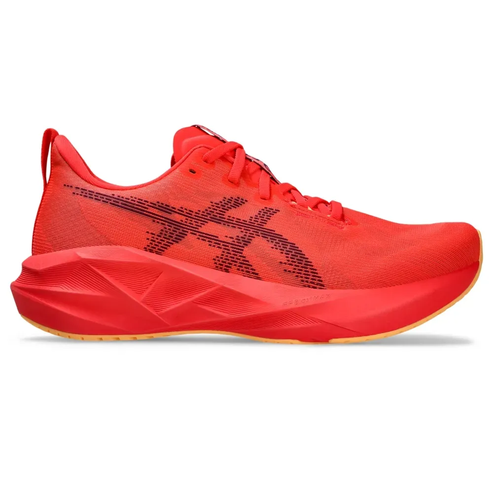

Equipamentos Utilizados

Asics Novablast 5
Utilizado Atualmente

Olympikus Corre 4
Primeiro Tênis Oficial
- APOSENTADO -
586km corridos
Utilizado Atualmente
Primeiro Tênis Oficial
- APOSENTADO -
586km corridos